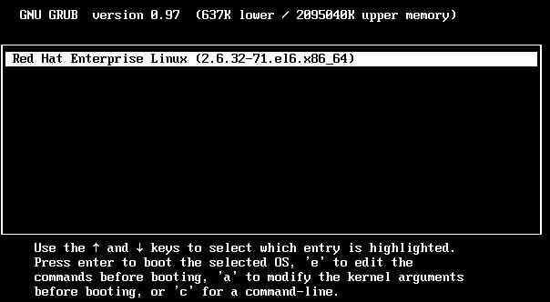
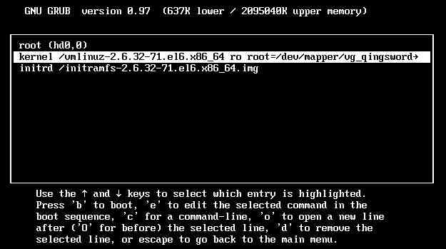
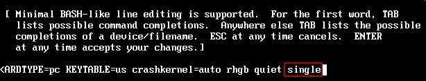
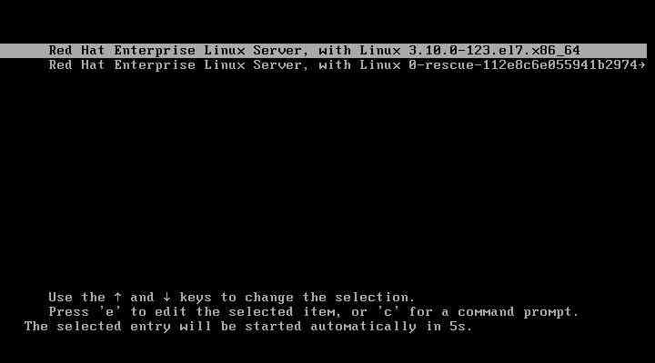
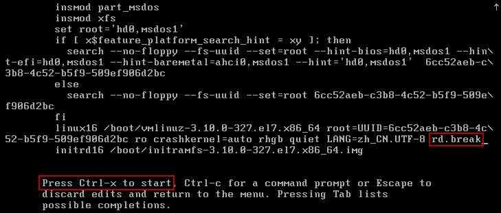

[RHEL]-1-如何重置RHEL用户密码
引言
这篇文章将介绍，在RHEL系统中，当我们忘记了root密码时如何通过内核功能来重置root密码。
文章目录
0×1.RHEL6如何重设root密码
RHEL6与RHEL7重置root密码的方法稍有区别，开机后在如下图所示启动界面，敲击键盘任意键，进入grub选择界面：
在选择界面中，选择对应系统，按下键盘"e"键：
然后选择到对应的系统内核，按下键盘"e"键，如下图所示：
使用键盘的方向键，移动光标，在"quiet"后面添加一个空格，输入"single"，然后回车返回上图（图3）的界面中，按"b"键启动系统，进入单用户模式：
在单用户模式下，可以使用"passwd root"命令来重置root密码，如果命令无效(不提示新密码的输入)，可以使用"vim /etc/passwd"命令编辑passwd文件，将"root:x:0:0:root:/root:/bin/bash"中的x删除保存重启即可（这样进入系统时，输入root用户名就能直接进入，相当于清空了root密码）。
#1.方法一 [www@qingsword.com /]# passwd root #2.方法二 [www@qingsword.com /]# vim /etc/passwd #删除root这一行中的字符"x" root:x:0:0:root:/root:/bin/bash
0×2.RHEL7如何重设root密码
首先在grub选择界面中选择需要恢复root密码的RHEL系统，按下键盘的"e"键，编辑启动脚本代码：
用键盘方向键移动光标，在倒数第二行的末尾添加一个空格，输入"rd.break"，然后按"ctrl+x"保存退出，如下图所示：
稍后就会进入应急启动模式，在这个模式中使用下面的命令来重置root密码：
#1.首先以可读写方式重新挂载/sysroot switch_root:/# mount -o remount,rw /sysroot #2.将程序执行参考的根目录改成/sysroot switch_root:/# chroot /sysroot #3.将root用户的密码改成qingsword.com（也可以直接passwd root来设置root密码） sh-4.2# echo "qingsword.com" | passwd --stdin root #4.如果系统开启了selinux必须执行这一句，否则可以跳过 sh-4.2# touch /.autorelabel #5.退出并且重启 sh-4.2# exit switch_root:/# reboot